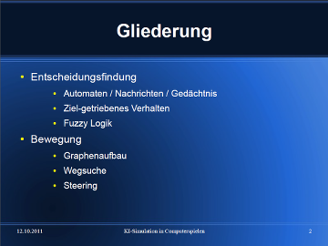

Simulation of AI in computer games is a topic that I've lectured about in the winter semester 2011/12 at the Seminar course of B.Sc. Applied Computer Science (B-AI).
The goal of the seminar was to teach fellow students about an artifical intelligence topic via a 30 minutes presentation, followed by an 15 minutes audience discussion.
The topic selection happened at the end of the previous semester. During the semester break I read two text books[1]Programming Game AI by Example by Mat Buckland and AI for Game Developers by David M. Bourg and Glenn Seemann. about the topic for research purposes, so that I could held my presentation at the first appointment successfully.
Sadly, I could only cover these topics of game A.I. theoretically in this seminar, but I partially implemented them later with Dark Side of Morra, Brain of teh Zwarm and Death Star PD at the B.Sc. Media Systems (B-MS) degree program.
| Languages | LaTeX |
|---|---|
| Tools | LibreOffice Impress |
| Participants | 1 |

{kind=link}